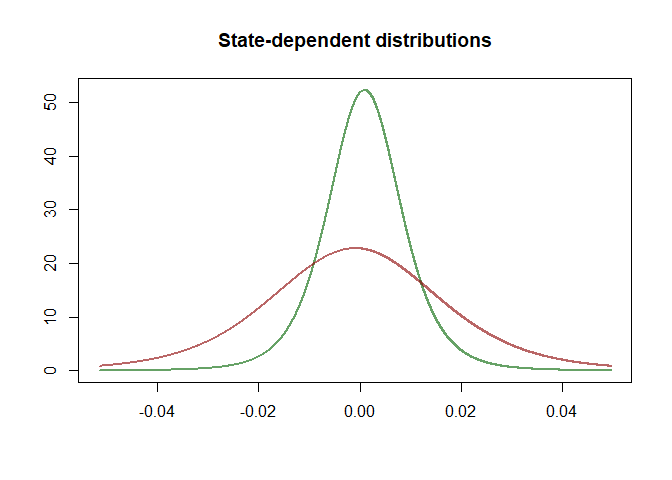
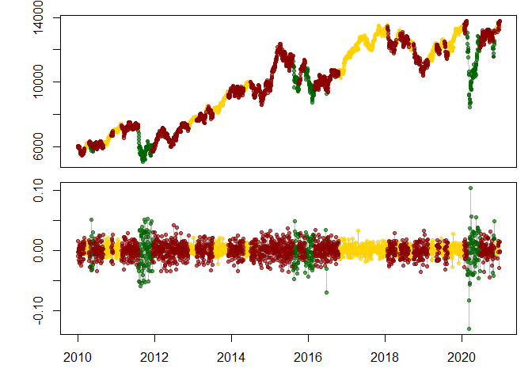

The goal of fHMM is to detect bearish and bullish markets in financial time series aplying (hierarchical) hidden Markov models.
Installation
You can install the released version of fHMM from CRAN with:
install.packages("fHMM")And the development version from GitHub with:
# install.packages("devtools")
devtools::install_github("loelschlaeger/fHMM")Example: Fitting an HMM to the DAX
library(fHMM)
#> Thanks for using fHMM version 0.3.0.9000, have fun!
#> See https://loelschlaeger.github.io/fHMM for help.
#> Type 'citation("fHMM")' for citing this R package.
library(magrittr)We fit a 3-state HMM with state-dependent t-distributions to the DAX log-returns from 2010 to 2020.
The package has a build-in function to download the data from Yahoo Finance:
download_data(symbol = "^GDAXI", file = "dax.csv", verbose = FALSE)We first need to define the model by setting the controls:
controls = list(
states = 3,
sdds = "t",
data = list(file = "dax.csv",
date_column = "Date",
data_column = "Close",
logreturns = TRUE,
from = "2010-01-01",
to = "2020-12-31")
)
(controls %<>% set_controls)
#> fHMM controls:
#> * hierarchy: FALSE
#> * data type: empirical
#> * number of states: 3
#> * sdds: t()
#> * number of runs: 100The function prepare_data prepares the data for estimation:
data = prepare_data(controls)
summary(data)
#> Summary of fHMM empirical data
#> * number of observations: 2791
#> * data source: dax.csv
#> * date column: Date
#> * log returns: TRUEWe now fit the model and subsequentially decode the hidden states:
model = fit_model(data, ncluster = 7) %>% decode_states
#> Checking start values
#> Maximizing likelihood
#> Computing Hessian
#> Fitting completed
#> Decoded states
summary(model)
#> Summary of fHMM model
#>
#> simulated hierarchy LL AIC BIC
#> 1 FALSE FALSE 8633.669 -17237.34 -17148.32
#>
#> State-dependent distributions:
#> t()
#>
#> Estimates:
#> lb estimate ub
#> Gamma_2.1 3.965e-06 3.961e-06 3.957e-06
#> Gamma_3.1 6.191e-03 6.351e-03 6.515e-03
#> Gamma_1.2 1.385e-08 1.384e-08 1.383e-08
#> Gamma_3.2 3.261e-02 3.328e-02 3.397e-02
#> Gamma_1.3 2.715e-02 2.781e-02 2.848e-02
#> Gamma_2.3 4.772e-02 4.874e-02 4.978e-02
#> mu_1 -1.544e-03 -1.459e-03 -1.373e-03
#> mu_2 1.215e-03 1.230e-03 1.244e-03
#> mu_3 1.099e-04 1.330e-04 1.561e-04
#> sigma_1 2.131e-02 2.141e-02 2.151e-02
#> sigma_2 4.994e-03 5.016e-03 5.039e-03
#> sigma_3 1.133e-02 1.137e-02 1.140e-02
#> df_1 7.507e+00 7.679e+00 7.854e+00
#> df_2 4.536e+00 4.592e+00 4.649e+00
#> df_3 1.820e+01 1.890e+01 1.962e+01
#>
#> States:
#> decoded
#> 1 2 3
#> 315 943 1533Let’s visualize the estimated state-dependent distributions and the decoded time series:

